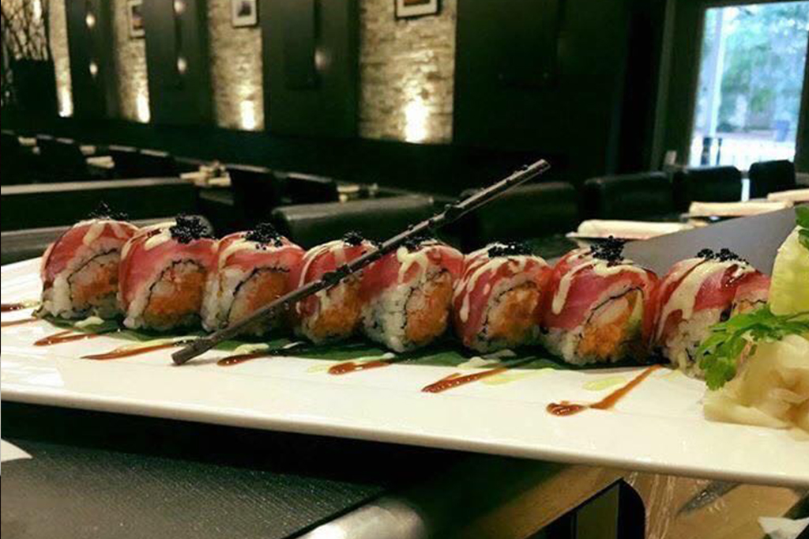
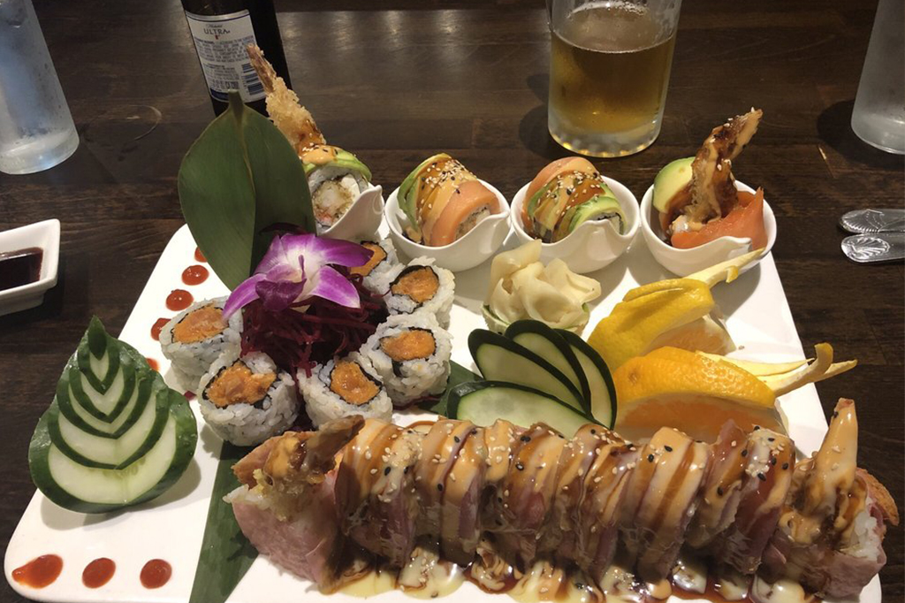

Welcome to Nagoya Sushi Restaurant! We focus on providing healthy, fresh, and natural dishes to satisfy the modern customer’s tastes and needs. Nagoya Sushi Restaurant was born in 2008, welcoming guests to enjoy Japanese cuisine and the freshest sushi in town. With over a decade of operating in Tallahassee, we offer you warm hospitality and unparalleled service. We strive to provide a vibrant and charming experience every time you visit us.
Try our delicious food and service today. Come in for a Japanese Lunch Special or during evenings for a delicious Japanese style dinner. You can also online order your favorite food for take out. If you have any suggestion to our food or service, please go to the customer feedback page and leave us your suggestion or review. We will respond to your suggestion as soon as possible.
We're ocated at 1925 N Monroe St, #101, Tallahassee, FL 32303, our restaurant offers a wide array of authentic Japanese food, such as Shrimp Tempura, Chicken Katsu, Hibachi Steak, Unagi Don, California Roll, Sushi & Sashimi Combo.
 